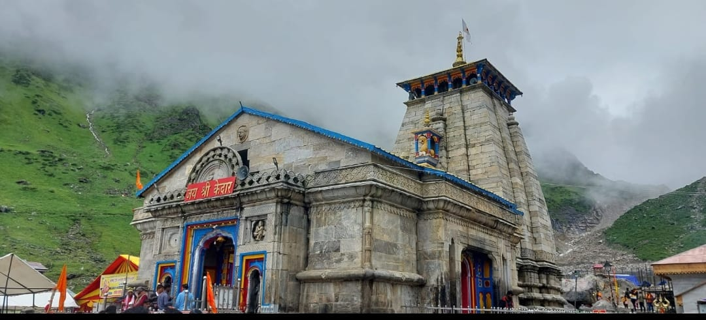
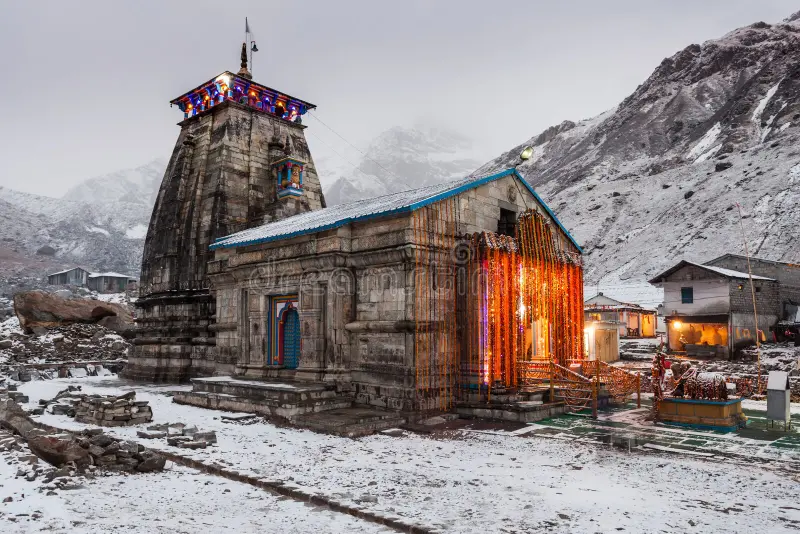

Featured Photos




Kedarnath, located in the Rudraprayag district of Uttarakhand, is one of the holiest Hindu pilgrimage sites dedicated to Lord Shiva. Situated at an altitude of 3,583 meters (11,755 feet) above sea level, Kedarnath is nestled amidst the majestic Garhwal Himalayas. The town is home to the ancient Kedarnath Temple, which is believed to have been built by the Pandavas. Devotees from all over the world embark on a rigorous trek to reach the temple, seeking blessings and spiritual solace. Apart from its religious significance, Kedarnath offers breathtaking views of snow-capped peaks, pristine landscapes, and serene surroundings, making it a must-visit destination for nature lovers and adventure enthusiasts alike.